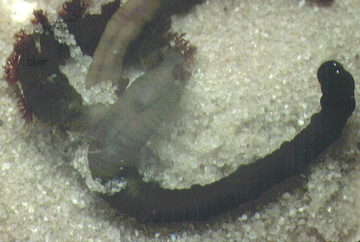

Lugworms grow up to 20 cm in length. They live in a thin mucus tube within a U-shaped burrow. They have a greenish colour and along part of the body there are thirteen pairs of red gills.

Arenicola marina The Blow Lugworm
A dark coloured worm reaching about 20cm in length with a distinctly fatter front end of 19 bristle bearing segments of which the rear 13 bear pairs of red branching gills. The thinner "tail" end is comprised of many segments but lacks bristles or gills and can often bee seen to contain sand. This species can tolerate salinities down to 12
The Lugworm will typically be found living in a U shaped burrow with a faecal cast at one end and a "blow hole" at the other. These burrows are very conspicuous and huge aggregations of adult worms are often found on sheltered sandy beaches. The blow lugworm is a deposit feeder and ingests sand particles from its burrow. any micro organisms and detritus stuck to the sand particles are digested as the sand passes through the worms gut. The action of ingesting particles from the head end usually causes the Blow Hole to collapse inwards giving the burrow a more J shaped appearance than the true U shape. In response to this unusual burrow shape the worms main avian predator the curlew has evolved a curved beak to enable it to reach the worms as they lie in the bottom of their burrow
The sexes are separate and breeding usually takes place in the autumn over a two to 3 week period probably initiated by environmental cues. The males release sperm onto the sediment surface from within their burrows which is drawn in by the females as they aerate their burrows. The larvae initially develop inside the female's burrow but soon move to the surface where they are moved by tidal currents to more solid areas of shingle and pebbles. Here they undergo further development for a few months inside a mucous tube attached to the substrate. When this stage is over the tube releases from the sea floor to float into the surface waters from where they settle out and burrow into their preferred habitat of sand or mud
To obtain oxygenated water, fresh sea water is drawn in by the worms by them pulsating their body segments within the burrow. This creates pressure differences in the burrow which causes water to flow in from the tail end over the external branching gills and then back out of the burrow.
When handled, a secretion is given off from the worms tail. This secretion will temporarily dye skin yellow but is harmless to humans.

Arenicola defodiens The Black Lug
Similar to the blow lug in shape but usually larger; reching 27cm length and black in colour. It can not tolerate brackish water. A definite morphological difference from A. marina can be seen from the number of rings on the first four bristle bearing segments. The Black Lugworm does not leave a feeding depression and its cast is usually smaller and neater than that of the blow lugworm. This species generally occupies more exposed beaches than A. marina and prefers thixotropic sand on the lower shore.
Looking for a next step?
The FSC offers a range of publications, courses for schools and colleges and courses for adults, families and professionals that relate to the seashore environment. Why not find
out more about the FSC?

FEEDBACK
Do you have any questions?
Copyright © 2008 Field Studies Council

Creative Commons Attribution-Noncommercial-No Derivative Works 3.0 Licence .
Site Statistics by Opentracker